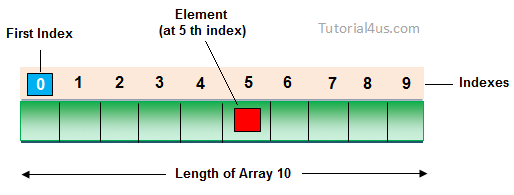

An Array is a collection of similar data type value in a single variable. An array is a derived data type in C, which is constructed from fundamental data type of C language.

#include<stdio.h> #include<conio.h> void main() { int i,a[5],no,pos; clrscr(); printf("Enter element in array: "); for(i=0;i<5;i++) { scanf("%d",&a[i]); } printf("\nStored element in array: "); for(i=0;i<5;i++) { printf(" %d",a[i]); } printf("\nEnter position for enter element: "); scanf("%d",&pos); if(pos>5) { printf("\nThis is out of range"); } else { printf("\nEnter new element: "); scanf("%d",&no); --pos; for(i=5;i>=pos;i--) { a[i+1]=a[i]; } a[pos]=no; printf("\nStored data in array: "); for(i=0;i<6;i++) { printf(" %d",a[i]); } } getch(); }
Enter elements in array: 4 4 2 5 7 Stored data in array: 4 2 5 7 Enter position for enter element: 2 Enter new element: 8 Stored data in array: 4 2 5 7 8
#include<stdio.h> #include<conio.h> void main() { int i,a[10],temp,j; clrscr(); printf("Enter any 10 num in array: \n"); for(i=0;i<=10;i++) { scanf("%d",&a[i]); } printf("\nData before sorting: "); for(j=0;j<10;j++) { printf(" %d",a[j]); } for(i=0;i<=10;i++) { for(j=0;j<=10-i;j++) { if(a[j]>a[j+1]) { temp=a[j]; a[j]=a[j+1]; a[j+1]=temp; } } } printf("\nData after sorting: "); for(j=0;j<10;j++) { printf(" %d", a[j]); } getch(); }
Enter any 10 num in array: 10 50 30 20 60 80 70 90 100 Data before sorting: 10 50 30 20 60 80 70 90 100 Data after sorting: 10 20 30 40 50 60 70 80 90 100
#include<stdio.h> #include<conio.h> void main() { int i,a[5],no,pos; clrscr(); printf("Enter element in array: "); for(i=0;i<5;i++) { scanf("%d",&a[i]); } printf("\nStored element in array: "); for(i=0;i<5;i++) { printf(" %d",a[i]); } printf("\nEnter poss. of element to delete: "); scanf("%d",&pos); if(pos>5) { printf("\nThis value is out of range "); } else { --pos; for(i=pos;i<=4;i++) { a[i]=a[i+1]; } printf("\nAfter deletion elements in array: "); for(i=0;i<4;i++) { printf(" %d",a[i]); } } getch(); }
Enter element in array: 10 30 50 20 Stored element in array: 10 30 50 20 Enter poss. of element to delete: 3 After deletion elements in array: 10 30 20